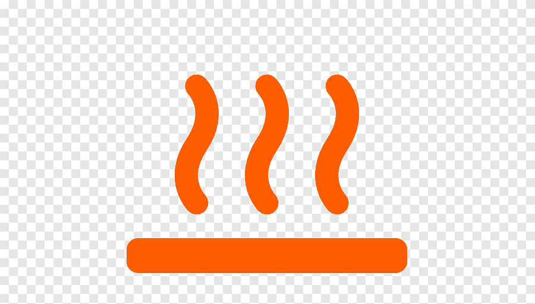

¿Que son las energías renovables?
Las energías renovables son aquellas que se obtienen a partir de fuentes naturales que producen energía
de forma inagotable e indefinida.También se consideran renovables cuando se obtienen a partir de fuentes
que se regeneran con el tiempo de manera natural, como la masa forestal.
Una de las principales ventajas de las energías renovables es que, además de ser inagotables, presentan
un nulo o bajo impacto negativo sobre el medio ambiente, por lo que se consideran energías limpias. En
la actualidad las energías renovables son una realidad presente en nuestra sociedad y sus beneficios
para el medio ambiente son más que evidentes.
Distintos tipos de energías renovables:
Energia Solar

La energía solar es la producida por la luz o el calor del sol para la generación de electricidad o la producción de calor. Inagotable y renovable, pues procede del sol, se obtiene por medio de paneles y espejos.
Energia Eolica

La energía eólica es una fuente de energía renovable que utiliza la fuerza del viento para generar electricidad. El principal medio para obtenerla son los aerogeneradores de tamaño variable que transforman con sus aspas la energía cinética del viento en energía mecánica.
Energia Hidráulica

La energía hidráulica se obtiene del aprovechamiento de las energías cinética y potencial de la corriente del agua o los saltos de agua naturales. En el proceso, la energía potencial, durante la caída del agua, se convierte en cinética y mueve una turbina para aprovechar esa energía.
Energia Mareomotriz
La energía mareomotriz es la que se obtiene aprovechando las mareas: mediante el uso de un alternador se puede utilizar el sistema para la generación de electricidad, transformando así la energía mareomotriz en energía eléctrica, una forma energética más segura y aprovechable..
Energia geotérmica
La energía geotérmica es una energía renovable que aprovecha el calor del subsuelo para climatizar y obtener agua caliente sanitaria de forma ecológica. Es una de las fuentes de energía renovable menos conocidas, sus efectos son espectaculares de admirar en la naturaleza.
Energia Undimotriz
La energía olamotriz o undimotriz proviene de las olas. Se produce aprovechando su movimiento, con lo que se trata de una energía sostenible con un gran potencial, pues hay olas en todos los mares y costas del planeta.